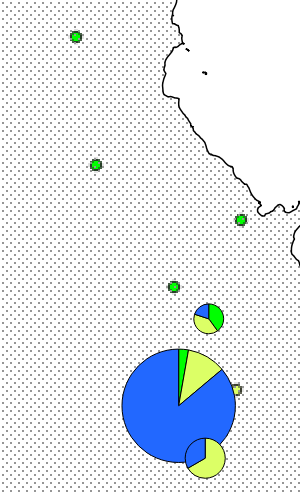
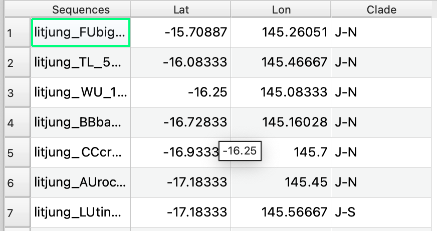
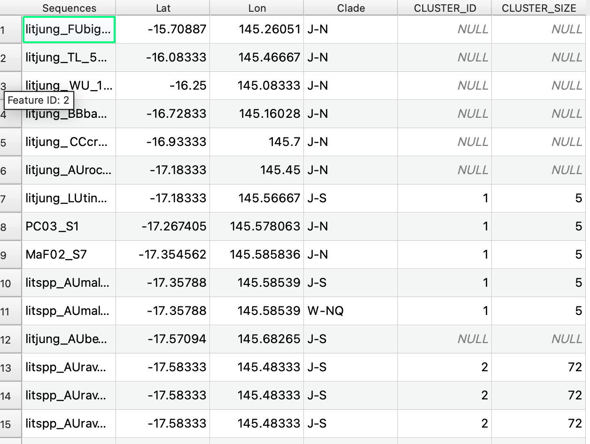
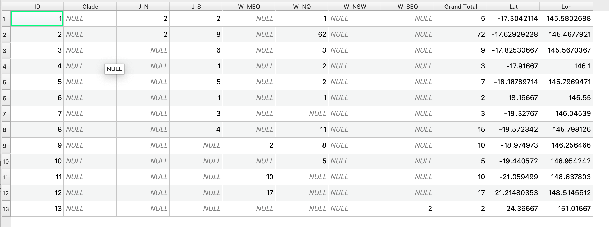
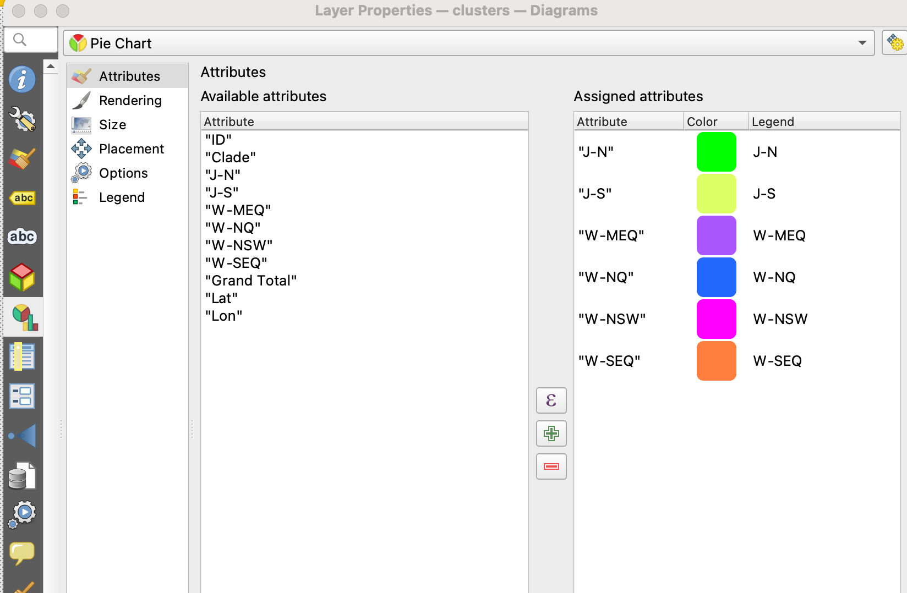
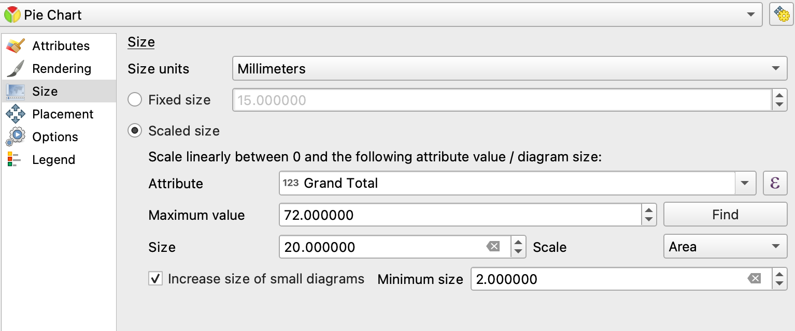
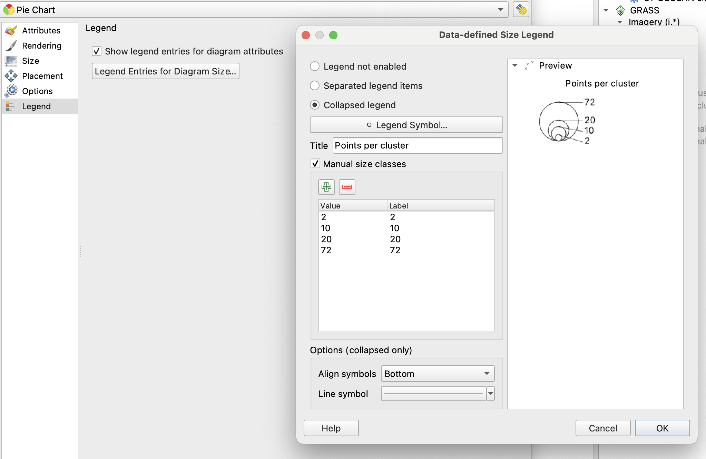

This is how I made a haplotype map using QGIS. There are different ways to do this. This way is a bit hacky, but I liked the result compared to the alternatives I tried in QGIS and other software. The result is a haplotype map with individuals coloured by clade, and clustered. This lets you represent clusters using pie charts, where the size is relative to the total number of individuals at that cluster, and the colours of the pie correspond to your different clades:

I started with a points layer in QGIS, with labels for the clade:

Then I clustered points based on distance using the “DBSCAN clustering” tool in QGIS. I used a 0.1 decimal degree buffer size.
This worked out to be around 40 km or so. I used some visual trial and error to get the clusters that I thought were reasonable. The amount of clustering you do will depend on your scale and research question. Although this clustering is purely for a qualitative visual aid. The result is a layer that looks like this:

Now each point has a cluster ID representing the cluster it belongs to, and how many points exist in total in that cluster ID. Some points may not be clustered if they are too far from others (cluster_id = NULL), and in my case that was fine because they were isolated individuals and I didn’t want them pulled into a cluster.
The problem is it is still 173 rows (all my samples) as individual points. So
the hacky part, I exported to .csv and changed the table format to wide and
made it look like this – 1 row per cluster (ID), and imported back into QGIS:

And note – this table won’t include any leftover points which didn’t get assigned a cluster, but I add those back in later with a separate layer after making the pie charts.
To get the lat / lon of each cluster I calculated the mean lat and mean lon for all points in that cluster.
So now I have 13 points, 1 for each cluster, with the frequencies of each sample/haplotype in the clusters.
Then you go to layer properties for that layer, and diagrams, and select pie chart, and I assigned the attributes as my clade columns.

You can change the size to be scaled relative to the total and mess around with the maximum value and minimum etc to make it look good. I think I scaled to grand total but maximum value 72 because that was my biggest cluster. I can’t remember exactly how this works but its easy to change these values and see what looks good or not.

Eventually you will also want to output a nice figure, with the legend how you want it, which is also in those settings.

The final step is adding back in an extra layer of the leftover points which didn’t cluster (if you have any).